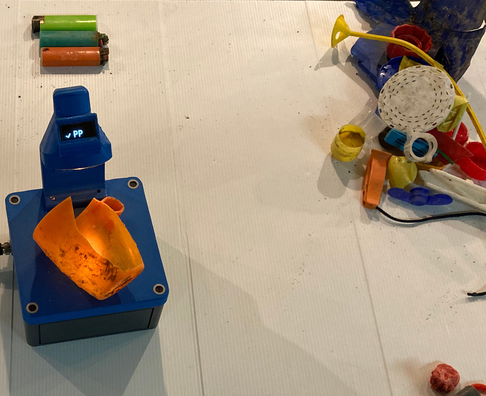
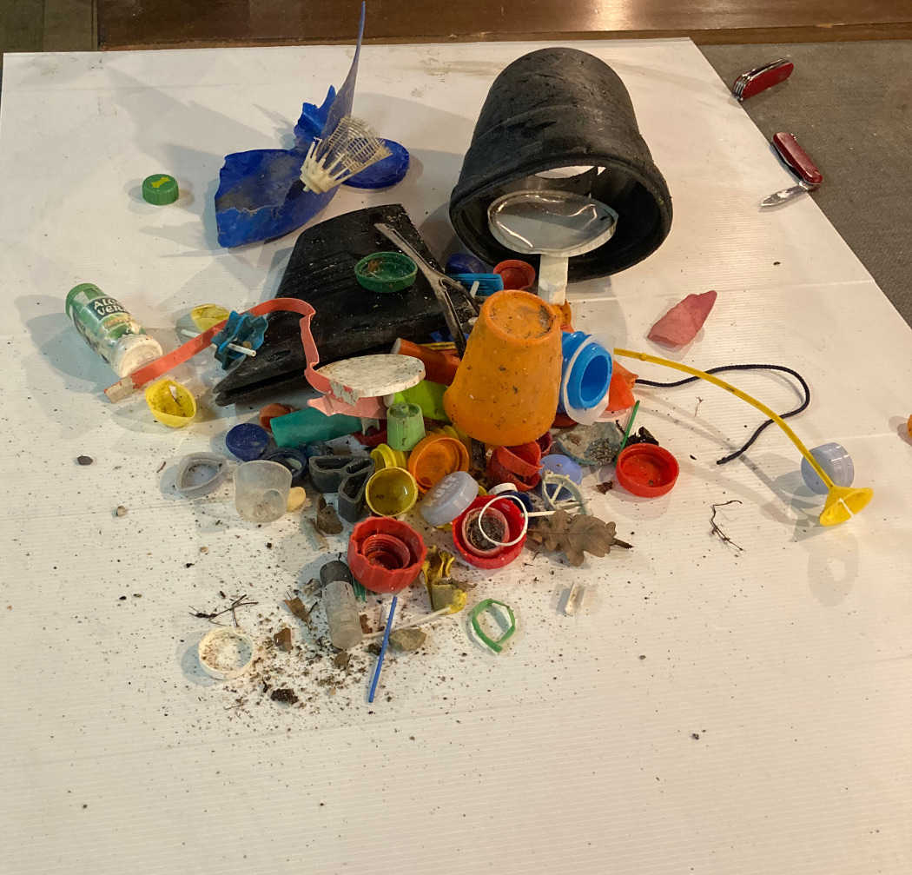
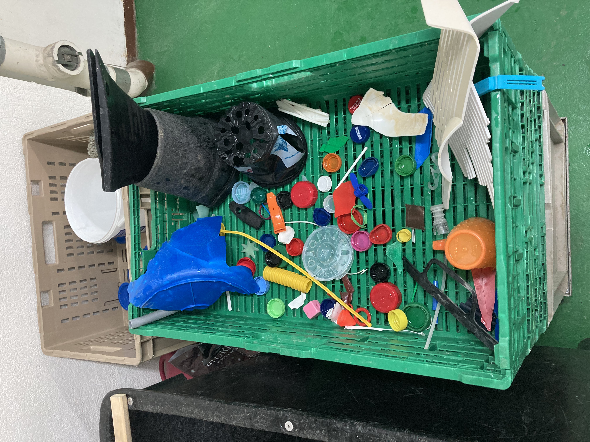
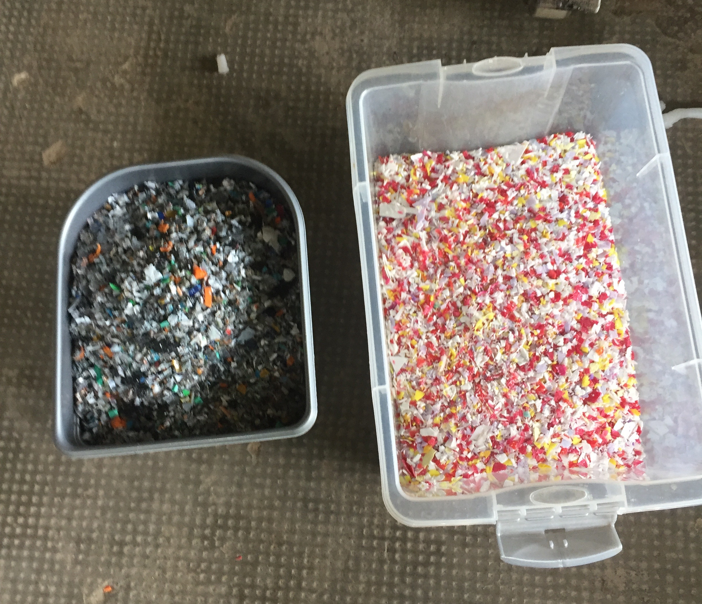
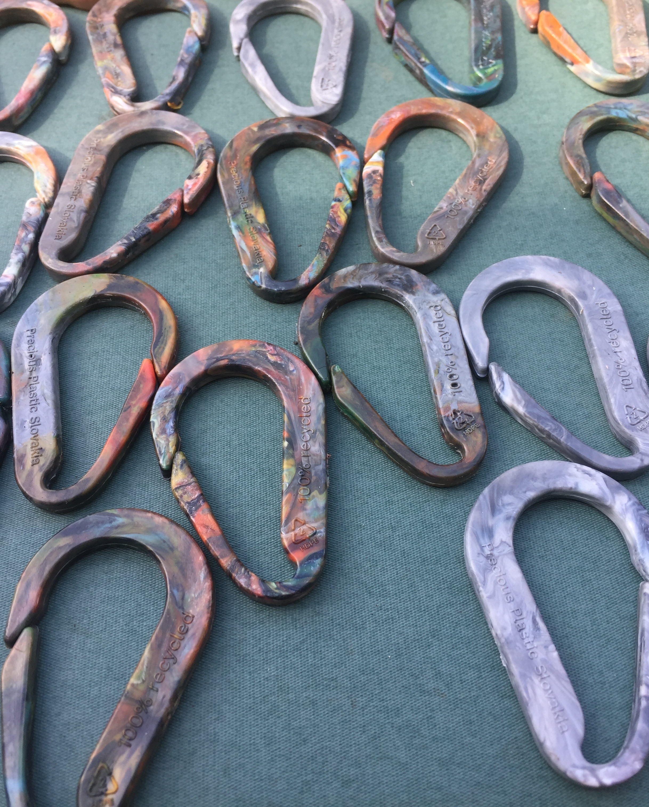
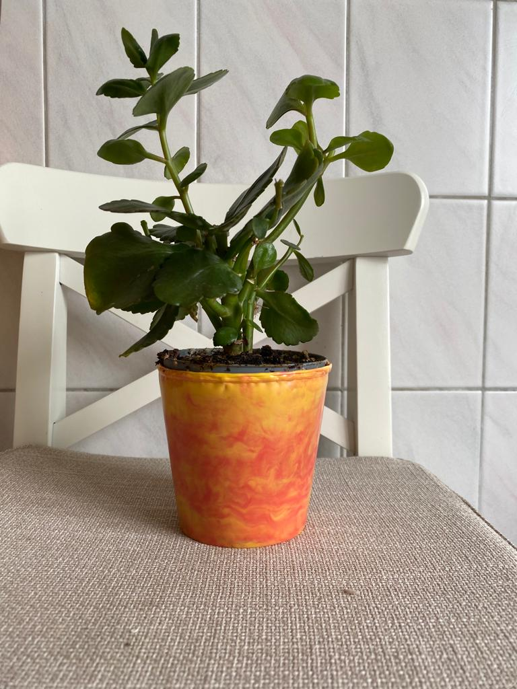
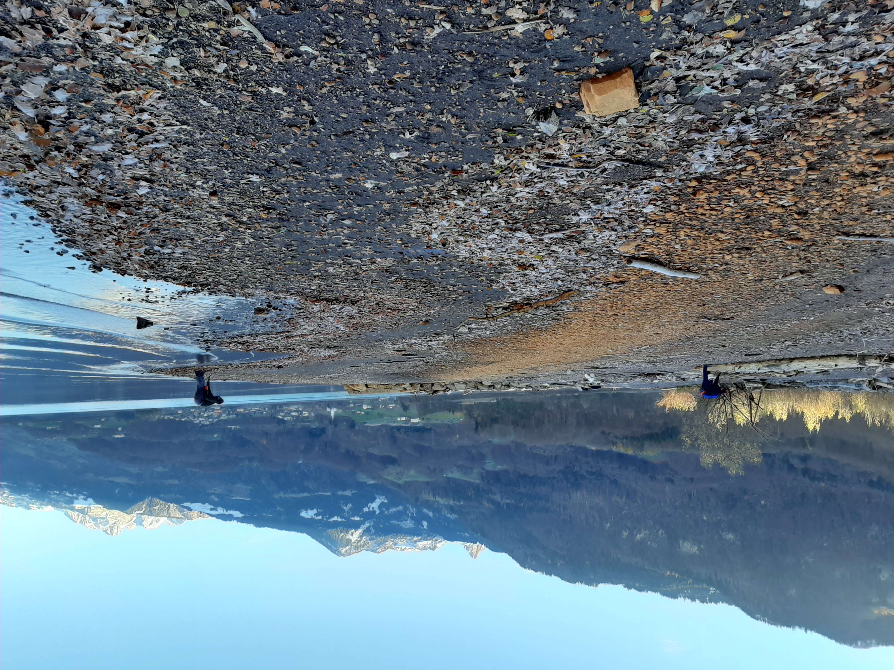

19. Recycle and remake¶
Precious Plastic Léman PPL is an association that actively promotes the reuse and reduction of plastic waste in the Lake Geneva region. Members create new products by transforming the plastic waste from their workshop in Lausanne.
As designers and fabricators PPL members spend more time in the workshop than outside collecting plastic litter. PPL primarily receives used plastics from donations dropped off at the workspace. With respect to beach-litter samples the members of PPL had two questions they wanted to answer:
How much of the collected plastic waste could be used in PPL operations?
What exactly would be required to recycle the plastics collected on the shoreline?
The members of PPL were responsible for three survey locations on Lac Léman and collected samples from April 2020 – May 2021. The transformation of used plastics into new products is a multi-step process. Once the items have been collected, they need to be sorted, cleaned, made into granules and then injection molded. Note the total quantities and percentages of identified items discussed below is all recorded data from the IQAALS project excluding Alps and Jura.
19.1. Sorting¶
Different types of plastics have different properties. PPL takes care to not mix plastic types during the transforming and making of products. For objects where the type of plastic is not clearly indicated PPL uses FTIR technology to differentiate the plastic types.
Identifying plastics from beach litter surveys
{kind=link}
A variety of plastics are encountered during a beach-litter survey. Not all of it can be transformed into products with added value. By identifying and grouping the plastics according to type, PPL can create objects best suited to the properties of the plastic being used.
19.1.1. Polyethylene terephthalate (PET)¶
The majority of PET found during the sampling period was in the form of drink bottles and food containers. However, most of the world’s production of PET is used to produce fibers. PET is not well suited to the current fabrication process at PPL and therefore is not used.
Only 88 PET drink bottles were recorded in 2020-2021 nationally along water system surveys.
19.1.2. High-density polyethylene (HDPE2)¶
HDPE2 has a high strength-to-density ratio and works well in the PPL system. HDPE2 takes the form of many items that were identified during surveys:
bottle lids
certain drink containers
detergent and chemical containers
Toys
Combined, at least 4% of all objects could have been classified as HDPE. From these objects PPL makes key rings, flowerpots and carabiners.
19.1.3. Polyvinyl chloride (PVC3)¶
PVC3 is a common material in construction plastics. Construction plastics are among the most common items on Lac Léman and nationally. Unfortunately, this product is toxic if not handled properly, PPL does not recycle this material.
Plastic construction waste was identified in 52% of all samples and was \(\approxeq\) 2% of all objects found
19.1.4. Low-density polyethylene (LDPE4)¶
LDPE4 is not commonly recycled because it is either not labeled or very difficult to clean. LDPE4 is often classified under industrial sheeting or thin film plastic bags.
Industrial sheeting was found in 69% of all samples and was \(\approxeq\) 4% of all objects found
19.1.5. Polypropylene (PP5)¶
PP5 takes diverse forms when found on the beach. PP5 can be used in chip bags, buckets, medicine bottles, straws and synthetic rope.
PPL has found many uses for PP5 including pots, wall clocks, frisbees and key rings.
PP5 represents a large group of objects in a beach-litter inventory, combined with fragmented plastics PP5 represents \(\approxeq\) 30-40% of all objects found and was identified (in one form or another) in 98% of the surveys
19.1.6. Polystyrene (PS6)¶
PS6 was found at almost all samples in either extruded or expanded foamed plastic. PS6 can be recycled by PPL into rigid sheets of material that take a fine polish. This takes two types of polystyrene expanded and extruded.
Expanded and extruded polystyrene was identified in 68% and 53% of all samples respectively. Combined they are responsible for at least 13% of all objects identified.
19.1.7. Acrylonitrile butadiene styrene (ABS)¶
ABS is light weight and can be injection molded or extruded. PPL use ABS and high impact polystyrene (HIPS) to make rigid recycled sheets.
ABS is included with construction plastics during the inventory process
19.2. Cleaning¶
Objects collected during sampling
{kind=link}
Once the objects are identified and sorted, they need to be cleaned before any transformation can occur. PPL used a combination of baking soda and vinegar with water to remove the mud and dirt from the objects that were collected from the beach.
Scrubbing and soaking sample material

After soaking for 12 hours the objects are brushed manually and set to dry.
{kind=link}
19.3. Transforming¶
The cleaned, sorted and dried plastics are shredded into granules that will then be injection molded.
Plastics transformed into granules for production
{kind=link}
19.4. Making¶
PP5 and HDPE2 are the most abundant objects from the litter surveys that also work well with the PPL system. Two types of products were produced from the plastics on Lac Léman.
Carabiniers
{kind=link}
Flower pots
{kind=link}
19.5. Discussion¶
Reusable plastic materials were identified in the majority of samples collected. Polypropelene, HDPE, PS6 and LDPE were the principal polymers identified. Fragmented plastics, foams and bottle caps can all be recycled locally using the methods implemented at Precious Plastic.
The discarded objects required substantially more cleaning than the material that PPL is accustomed to. Cleaning of used plastic products is a major expense in the recycling industry, PPL is no exception to this reality. Large scale recycling plants have water treatment facilities to remove the detergents and impurities that result from the cleaning process. PPL used baking soda and vinegar, this reduced the total amount of water and avoided using detergents that may have a negative effect on the environment. This method is appropriate for very small production runs but is costly in terms of labor.
As long as the cleaning and sorting processes were completed appropriately there was no reduction in the quality of products that were fabricated. The amount of plastics that can be collected and transformed into value added products during the litter-sampling process is not sufficient to maintain any sort of production capacity. However, it is clear that there is an abundance of recyclable plastics leaked into the environment.
The presence of easily recyclable products in the water means that there are missed opportunities with respect to valuing this resource and/or collecting it. Combined with the variety of items that are made of PP5, the estimated amount of recyclable objects collected on the beach represents 40-50% of the total amount of objects collected.
These results are not specific to a particular region and characterize the situation to some degree in all the survey areas of the IQAASL project.
Beach litter survey PPl 2020.11.22 Walenstadt, Walensee
{kind=link}